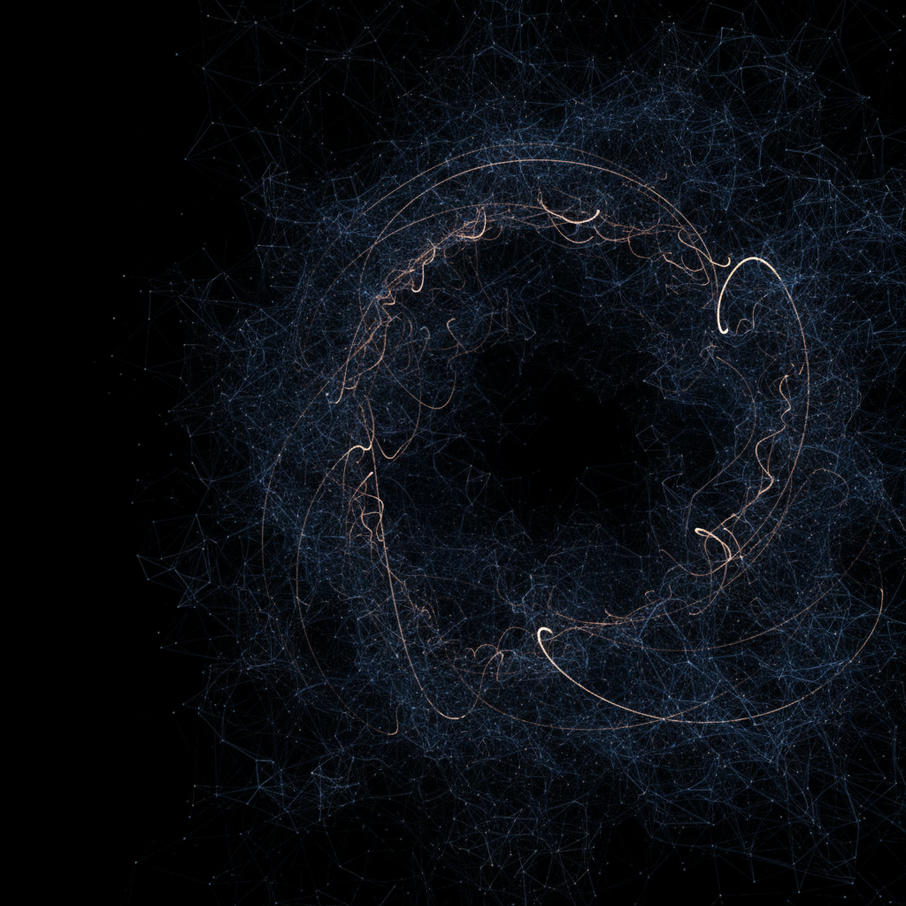

Ihr volles Potenzial, automatisiert.
Wir verwandeln Ihre komplexen, manuellen Unternehmensprozesse in intelligente, selbstlernende und hocheffiziente Workflows. Entfesseln Sie verborgene Ressourcen und konzentrieren Sie sich auf Ihr Wachstum.

Mehr als nur Automatisierung. Ihr strategischer Vorteil.
Unser Ansatz geht tiefer als reine Software-Implementierung. Wir schaffen ein intelligentes Ökosystem, das mit Ihrem Unternehmen wächst und Lernen fördert. Erleben Sie erstklassige Automatisierung mit KI.
Ergebnisse, die überzeugen.
Wir werden Sie von unseren Projekten überzeugen.
Von Komplexität zu Klarheit.
Wir glauben, dass die brillanteste Technologie die ist, die im Hintergrund für Ordnung sorgt. Unser Signatur-Prozess entwirrt Ihre manuellen Abläufe und schafft ein zentrales, intelligentes System, das für Sie arbeitet.
Entwickelt für anspruchsvolle Unternehmen.
Unsere Expertise ist darauf ausgerichtet, die komplexen Prozesse hinter den Sichtbaren Erfolgen von wachstumsorientierten Organisationen zu lösen.
Für den Mittelstand
Sie kämpfen mit repetitiven Aufgaben, die wertvolle Fachkräfte binden? Unsere Systeme kommunizieren nicht miteinander und verursachen manuelle Datenerhebung? Wir helfen Ihnen, Prozesse zu verschlanken, um agil zu bleiben und nachhaltig zu wachsen.
Für den Großunternehmen
Hier Abteilungen erarbeiten in Datensilos? Ob Finanzen, Produktion, Handel oder Dienstleistungen – überall wo repetitive, datenbasierte Prozesse existieren, kann KI einen enormen Mehrwert schaffen.
Für Startups & Scale-ups
Einführung eines intelligenten Chat- & Mail-Bots, der 80 % der Standardanfragen automatisiert beantwortet.